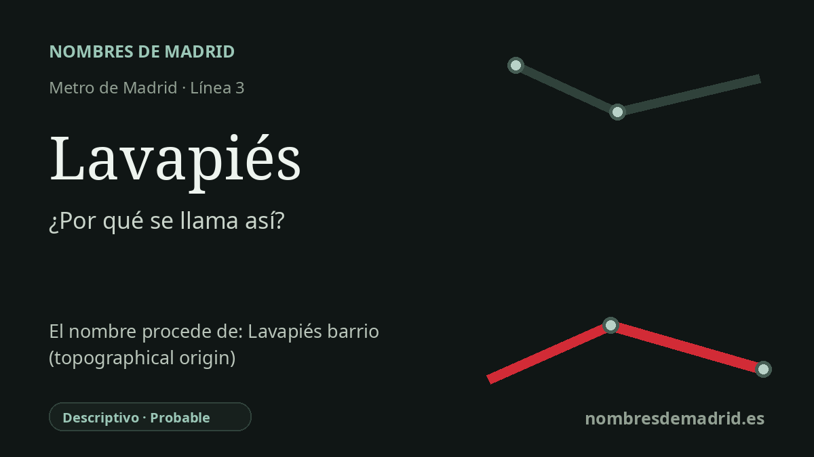

Publicado el · Investigación de Nombres de Madrid · Cómo verificamos cada origen · 9 fuentes consultadas
Respuesta rápida
La estación de Lavapiés toma su nombre de la plaza y del antiguo ámbito popular que la rodea. El origen más verosímil lo relaciona con calles empinadas y embarradas donde las torrenteras de lluvia lavaban o mojaban literalmente los pies de los viandantes.
La historia del nombre
La estación de Lavapiés toma su nombre de la plaza de Lavapiés y del entorno histórico que la rodea, uno de los topónimos populares más conocidos de Madrid aunque administrativamente forme parte del barrio de Embajadores. Metro de Madrid construyó la estación bajo esta plaza y sus calles inmediatas, de modo que el nombre del transporte no es una dedicatoria creada por el Metro: es un topónimo urbano anterior llevado al subsuelo.
El origen más verosímil de la palabra es el más directo: lava-pies, “lava pies”. En el Madrid antiguo no debe entenderse como una imagen amable de una plaza llana con una fuente, sino como la descripción de un terreno difícil. Las calles de Jesús y María, Lavapiés, Olivar y Ave María descendían por una zona escarpada e irregular; cuando había tormentas, el agua corría con fuerza por el suelo sin empedrar, convertía el barranco y sus calles en barro y mojaba los pies de quienes pasaban.
La documentación lleva el topónimo al menos hasta el siglo XV. Una nota de 2019 de José Manuel Castellanos Oñate, apoyada en el estudio Lavapiés, barranco y arrabal. Paisaje urbano al sur de Madrid, 1441-1547, explica que formas manuscritas antiguas como alavapies y delavapies pueden leerse tanto como “a Lavapiés/de Lavapiés” como “al Avapiés/del Avapiés”, porque la escritura bajomedieval no separaba siempre las palabras ni usaba mayúsculas de forma regular. Por eso las grafías antiguas prueban la antigüedad del topónimo, pero no demuestran limpiamente que Avapiés fuese anterior.
La célebre explicación de la fuente judía es mucho más débil. Autores de los siglos XIX y XX difundieron la idea de una judería en Lavapiés y de una fuente usada para lavados rituales antes de entrar en una sinagoga. Los estudios modernos sobre la población judía medieval de Madrid y las propuestas arqueológicas sobre la judería apuntan, en cambio, a zonas dentro o junto a la villa murada, especialmente Santa María de la Almudena, el Campo del Rey y el yacimiento de la Armería, mientras describen el Lavapiés medieval como un arrabal poco ocupado o prácticamente despoblado.
La estación pertenece a una etapa posterior. La Comunidad de Madrid fecha la inauguración del primer tramo de la línea 3, Embajadores-Lavapiés-Sol, el 9 de agosto de 1936, mientras que una ficha del Museo de Metro da el 8 de agosto de 1936 en la tabla de la estación y recuerda que la apertura pasó casi desapercibida porque la Guerra Civil había comenzado semanas antes. Por tanto, el nombre se usa en el Metro desde la apertura de la estación, aunque la explicación del topónimo antiguo sigue siendo probable y no absolutamente demostrada: la lectura topográfica es la mejor apoyada, y las historias judía y de las posadas quedan como leyendas urbanas.